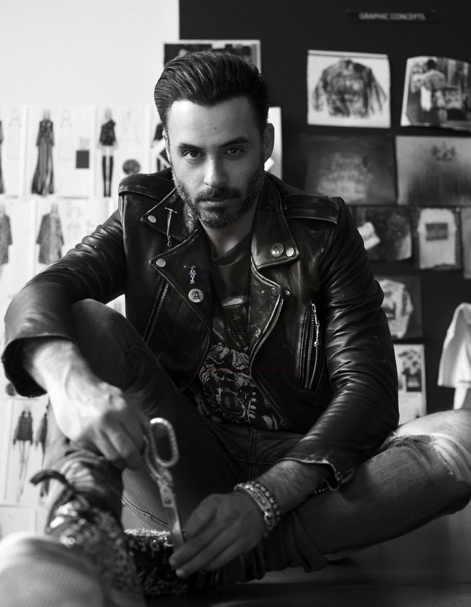
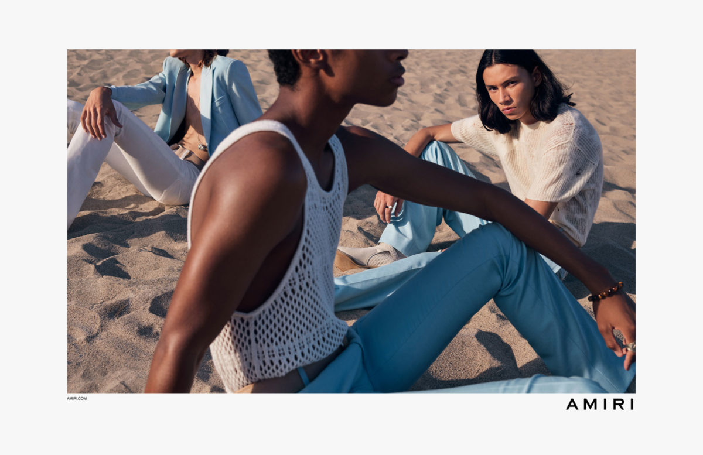

Майк Амири
 Майк Амири - американский / иранский модельер, который начал свою карьеру, создавая вручную сценические украшения для таких культовых хард-рокеров, как Эксл Роуз и Стивен Тайлер. Его эстетика рок-н-рока привела его к созданию эксклюзивной капсульной коллекции для концептуального магазина в Лос-Анджелесе Maxfield, ознаменовав запуск его одноименной линии роскошной моды AMIRI в 2014 году.
" Я хотел создать коллекцию близкую мне по духу, которая бы отразила стиль Лос-Анджелеса с точки зрения переосмысленного гламура "
Философия бренда
 Майк основал бренд с нуля, опираясь на глубокую привязанность к родному городу и почти сверхъестественную способность создавать именно то, что ищет современная молодежь: аутентичный стиль, который идеально вписывается в их образ жизни. Рваные джинсы и изношенные фланелевые рубашки не должны вводить вас в заблуждение. Все изделия AMIRI отличаются превосходным качеством: деним премиум-класса, ультрамягкий хлопок и посеребренные детали. Коллекции из деним производят в Лос-Анджелесе (США). Каждая модель – это результат серьёзных исследований и постоянного стремления превзойти самих себя.